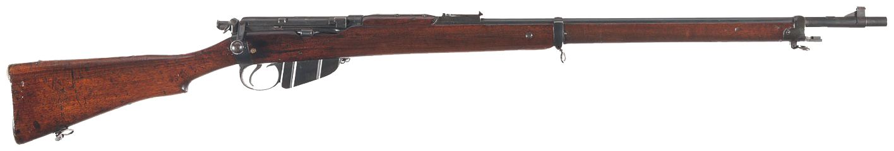

In August of 1915, Grace absented himself from the Canadian army and returned to Ireland. Grace would, however, not leave empty-handed. Despite leaving most of his possessions behind, he did not leave unarmed, smuggling his standard-issue Lee-Enfield rifle back to Ireland with 20 rounds of ammunition. He sailed on the ‘Cathagenia’ from Montreal, hiding the rifle under the mattress of his bunk.
Grace made landfall in Clyde, Scotland. From there, he took a train to Wales, where he could at last make the crossing to Ireland. Around three miles off the coast of Ireland, the ship’s bursar attempted to make him relinquish the rifle, claiming that he should have declared it upon his departure from Canada. Thinking quickly, Grace pushed past him, claiming that as they were this close to shore, they were outside his jurisdiction. Grace would consequently land safely in Kingstown, a port on the outskirts of Dublin proper, whereupon he would take a tram into the city.
Upon his final arrival in Dublin, Grace immediately reported to the Irish Volunteers, where he met Lt. Michael Malone.
(MAI, BMH WS 310, 1949, pp. 2-3)
|  |
| Long Lee Enfield Rifle Mk. I © Wikipedia Commons, Commando552 2013 |